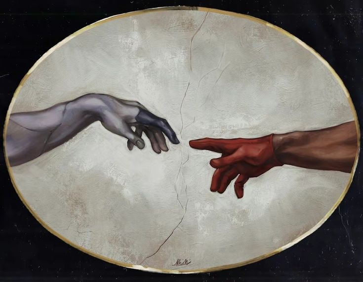
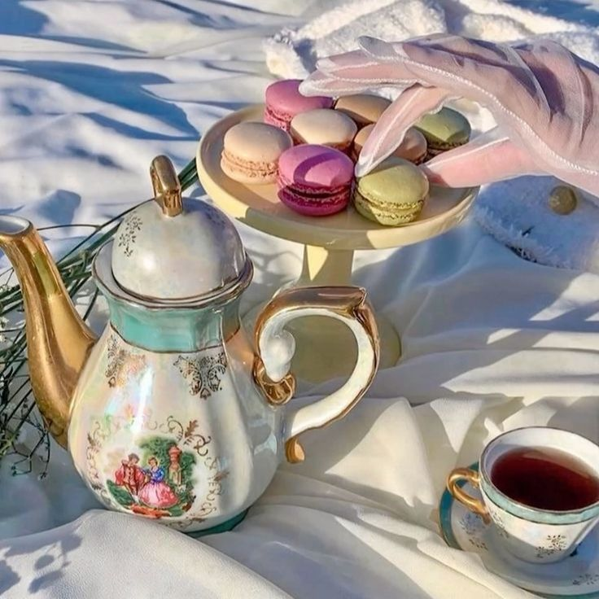
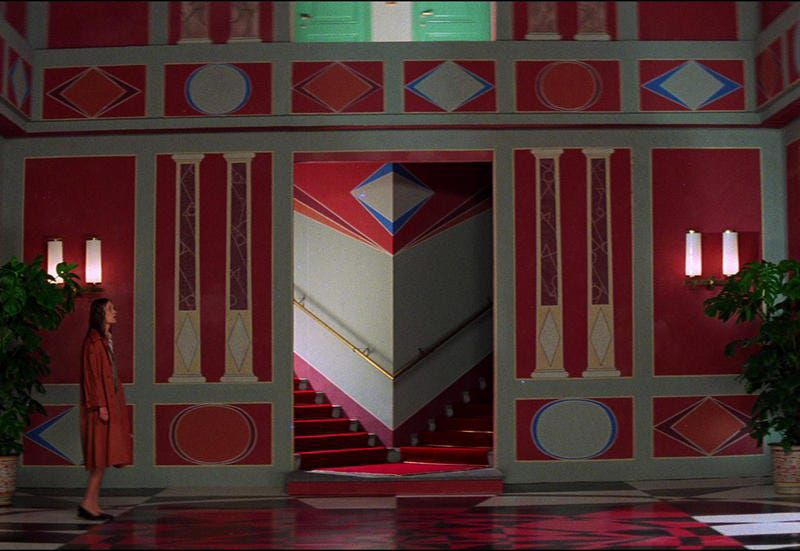
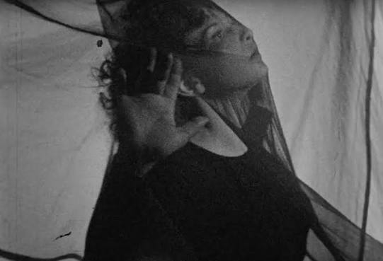
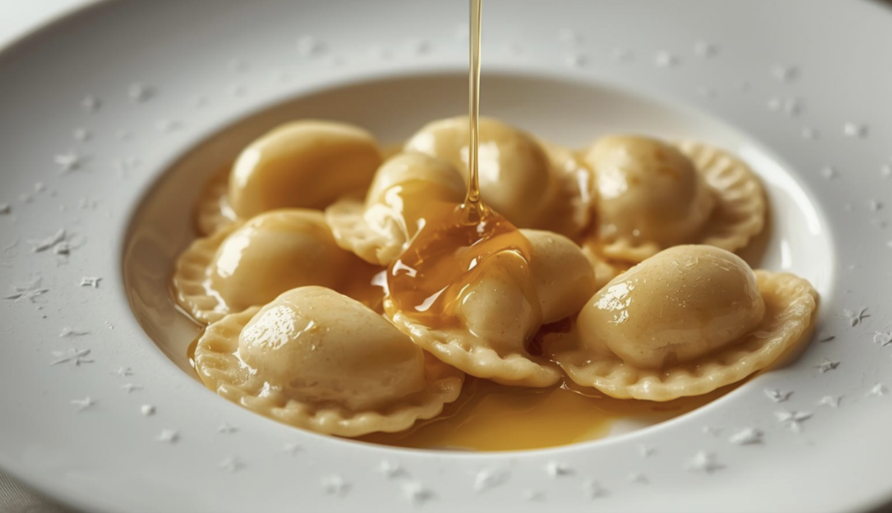
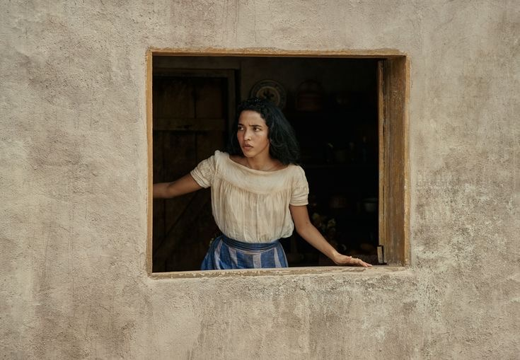
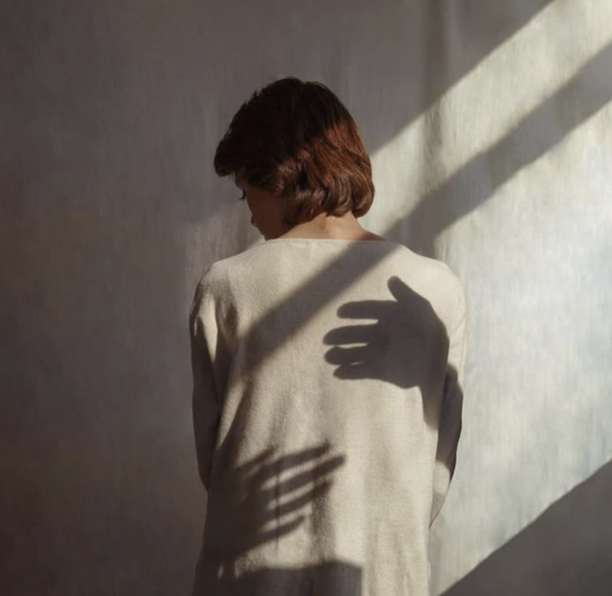

LA STANZA GRIGIA
La soglia, passaggio comune del sogno, il territorio condiviso e inconscio collettivo
Un'esperienza artistica immersiva

Un evento che intreccia fotografia, pittura, performance e installazioni per esplorare l'immaginario onirico condiviso.
Il sogno può essere
un'esperienza collettiva?
21 Giugno 2026 — Craving Arts - Art Gallery, Roma
REM nasce da una riflessione: il sogno è un'esperienza profondamente individuale, ma le immagini che lo abitano appartengono a un immaginario condiviso.
Simboli, archetipi e visioni interiori si intrecciano in uno spazio immersivo dove arte e percezione dialogano continuamente.
Attraverso fotografia, pittura, videoproiezioni, performance e installazioni, REM invita il visitatore a riconoscersi nell'esperienza dell'altro.
"Le immagini del sogno appartengono all'inconscio collettivo."
Il progetto si articola su due piani paralleli che dialogano attraverso il surrealismo, creando un'esperienza narrativa e sensoriale in continua evoluzione.
La prima dimensione del sogno esplora l'inconscio collettivo attraverso l'oscurità e il mistero.
La seconda dimensione rivela le forme fantastiche e le creature oniriche del surrealismo.
REM integra discipline artistiche differenti per costruire un'esperienza stratificata, emotiva e multisensoriale.
REM nasce come project work finale del Corso di Formazione Continua in Event Management presso lo IED — Istituto Europeo di Design di Roma.
Il progetto è ideato da un gruppo di giovani creativi accomunati dall'interesse per l'arte contemporanea, la progettazione culturale e le esperienze immersive.
L'obiettivo è creare uno spazio capace di connettere persone, immaginari e pratiche artistiche emergenti.
La soglia, passaggio comune del sogno, il territorio condiviso e inconscio collettivo

Tra le lenzuola agitate di una notte svizzera è nato il mostro che ha dato forma alla paura moderna.

Abbandona il rumore del mondo e sfoglia il ricettario liquido della Chimera. Ogni miscela è un sortilegio chic.

La resa perturbante dell'esperienza condivisa del sogno

Avete mai visto un film e pensato che sembrasse un sogno?
Chi ha detto che i sogni non hanno sapore? Nel mondo di REM si sogna con tutti i 5 sensi.

Bentornat* nella cucina di REM. Preparati ad assaporare il cielo notturno.

La peste arrivò a Macondo in modo insolito: non ci fu sangue, né urla di dolore, ma tra i suoi abitanti scomparvero i sogni.
L'evento è a ingresso libero, ma i posti sono limitati. Registrati per garantirti un posto e ricevere tutti gli aggiornamenti sull'esperienza.
Registrati all'evento ↗Verrai reindirizzato alla pagina di registrazione esterna.
L'ingresso è gratuito e i posti sono limitati.
Storie, immagini e linguaggi del mondo onirico
La soglia, passaggio comune del sogno, il territorio condiviso e inconscio collettivo

Come il Surrealismo dà forma alla natura profonda del sogno
Tra le lenzuola agitate di una notte svizzera è nato il mostro che ha dato forma alla paura moderna.
Abbandona il rumore del mondo e sfoglia il ricettario liquido della Chimera. Ogni miscela è un sortilegio chic.
La resa perturbante dell'esperienza condivisa del sogno
Avete mai visto un film e pensato che sembrasse un sogno?
Chi ha detto che i sogni non hanno sapore? Nel mondo di REM si sogna con tutti i 5 sensi.
La peste arrivò a Macondo in modo insolito: non ci fu sangue, né urla di dolore, ma tra i suoi abitanti scomparvero i sogni.
Bentornat* nella cucina di REM. Preparati ad assaporare il cielo notturno.

Quando sogniamo i nostri cari che non sono più nella loro fase terrena, spesso appaiono giovani, non afflitti dal dolore del corpo.
Le realtà che rendono possibile REM. Grazie per il vostro supporto al progetto.
REM è un'iniziativa culturale senza finalità commerciali. Se sei un'azienda, un'istituzione o una realtà creativa interessata a sostenere il progetto, contattaci.
Scrivici per diventare sponsor